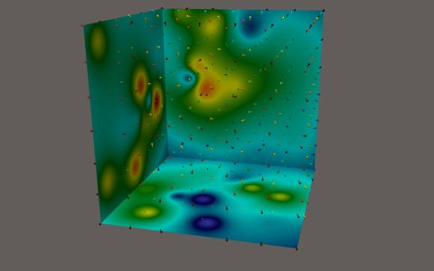
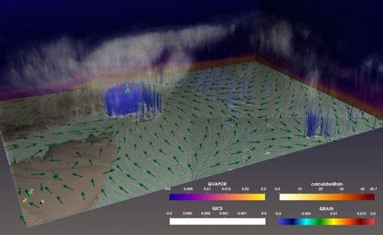

ParaView · VisIt · in situ · HPC
Small, tested examples of scientific visualization, from a laptop to a supercomputer
Visualization Vignettes is a cookbook of runnable ParaView and VisIt scripts, batch scripts for real clusters, and an in situ miniapp. Every vignette is also a regression test, run on each site and tool version, so you can see that it still works and how fast it runs.
For researchers and students learning to visualize large data on HPC systems, for HPC centres checking a new ParaView or VisIt build, and for developers of in situ tools.
 ParaView ex03 Isosurface animation
ParaView ex03 Isosurface animation
ParaView ex04 Streamlines
ParaView ex06 Large data ParaView ex09 Mesh topologies
ParaView ex09 Mesh topologies VisIt ex02 Camera animation
VisIt ex02 Camera animation VisIt ex06 Large data
VisIt ex06 Large data VisIt ex10 Colormap fidelity
VisIt ex10 Colormap fidelity VisIt ex12 Extract regression
VisIt ex12 Extract regressionThe baseline images every run is compared against, ParaView then VisIt. Select one to open it in the gallery.
Start here
What you can do
Run a vignette
Pulls the published image (ParaView 6.2.1, about 4.5 GB) and renders
ex01_pvScreenshot into a new folder, ~/vv-try. Linux or
macOS:
mkdir "$HOME/vv-try" && docker run --rm -e HOST_UID=$(id -u) -e HOST_GID=$(id -g) -v "$HOME/vv-try:/work" ghcr.io/jameskress/visualization_vignettes:latest bash -c 'cd /work && cp -r /app/Testing /app/data . && mkdir -p ParaView_Vignettes && cp -r /app/ParaView_Vignettes/ex01_pvScreenshot ParaView_Vignettes/ && pvbatch --force-offscreen-rendering ParaView_Vignettes/ex01_pvScreenshot/ex01_pvScreenshot.py'The folder must not exist yet, so nothing is overwritten. To try again after a failed pull, use another name in both places, or remove the empty folder.
Or open it in GitHub Codespaces →Browse the dashboard
The latest result of every vignette on every machine, what each tool upgrade changed, and each machine's history.
Open the dashboard → GallerySee what each vignette draws
Every baseline image, ParaView then VisIt, in vignette order.
Open the gallery → ContributeAdd your site
Run the suite on your workstation or cluster and send the results in a pull request. A check keeps names public and records valid.
Read the guide → In situGray-Scott miniapp
A reaction-diffusion simulation that renders while it runs, with Ascent, Catalyst2, ADIOS2 and Kombyne back ends.
Open the miniapp → CiteCite Visualization Vignettes
Citation metadata is in
CITATION.cff; GitHub's "Cite this repository" button gives BibTeX and
APA. A Zenodo DOI comes with release 1.1.0.
What's inside
Thirteen vignettes in each tool, and in situ examples
Each number is the same exercise in ParaView and in VisIt, with batch scripts for Ibex and Shaheen. ex00 to ex06 show how to do a thing; ex07 to ex12 check that a thing still works and fail the suite when it changes.
How to do a thing
- ex00Query
Prints facts about a dataset instead of drawing it; the printout is compared line by line with a saved copy. - ex01Screenshot
The smallest rendering pipeline: load or make one dataset, save one image. - ex02Camera animation
A camera flies around a scene for 100 frames, and the frames become a movie. - ex03Isosurface animation
An isosurface (the surface where a field equals one value) swept from 2.0 to 5.4 over 35 frames. - ex04Streamlines
343 streamlines traced through a vector field, growing over 125 frames. - ex05Time series
One image per step of a 20-step time series, each labelled with its cycle and time. - ex06Large data
A 5.7 GB cyclone simulation drawn as slices, terrain, volume rendering and wind, in parallel.
Checks that it still works
- ex07Scaling
Extracts and measures one isosurface at any number of ranks; the measurements must not change with the rank count. - ex08Backend check
Fails when a job that asked for a GPU renders in software. - ex09Mesh topologies
The same contour over four kinds of mesh; the point, cell and contour counts of each are checked. - ex10Colormap fidelity
One field through four colour maps (built in, custom, logarithmic, categorical), each with its legend. - ex11State verification
A saved session reloaded without a GUI and stepped through three time steps. - ex12Extract regression
Writes three kinds of output per time step (contour geometry, an image and a row of measurements) and checks each one against its baseline.
In situ
Gray-Scott reaction-diffusion, C++ and MPI, rendering in situ or in transit.
Ascent, Catalyst2 (ParaView), ADIOS2, Kombyne.
is00 zero-copy
adapter: hand a simulation's arrays to a visualization library without copying.
Docker, Codespaces, a workstation, Ibex and Shaheen III.